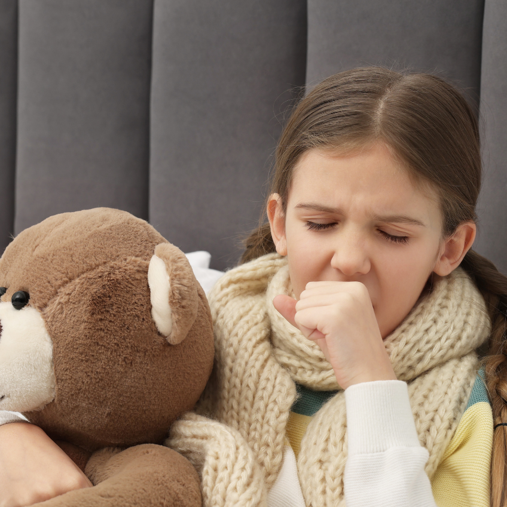
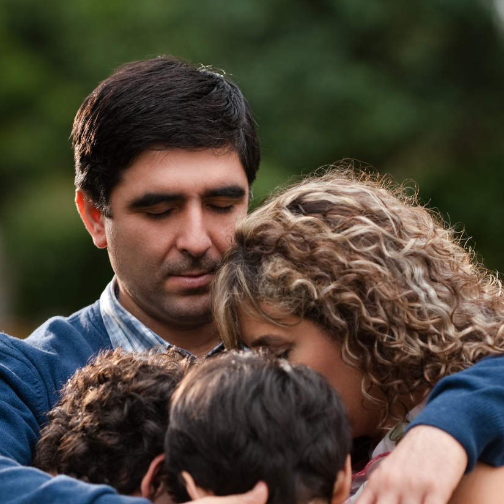
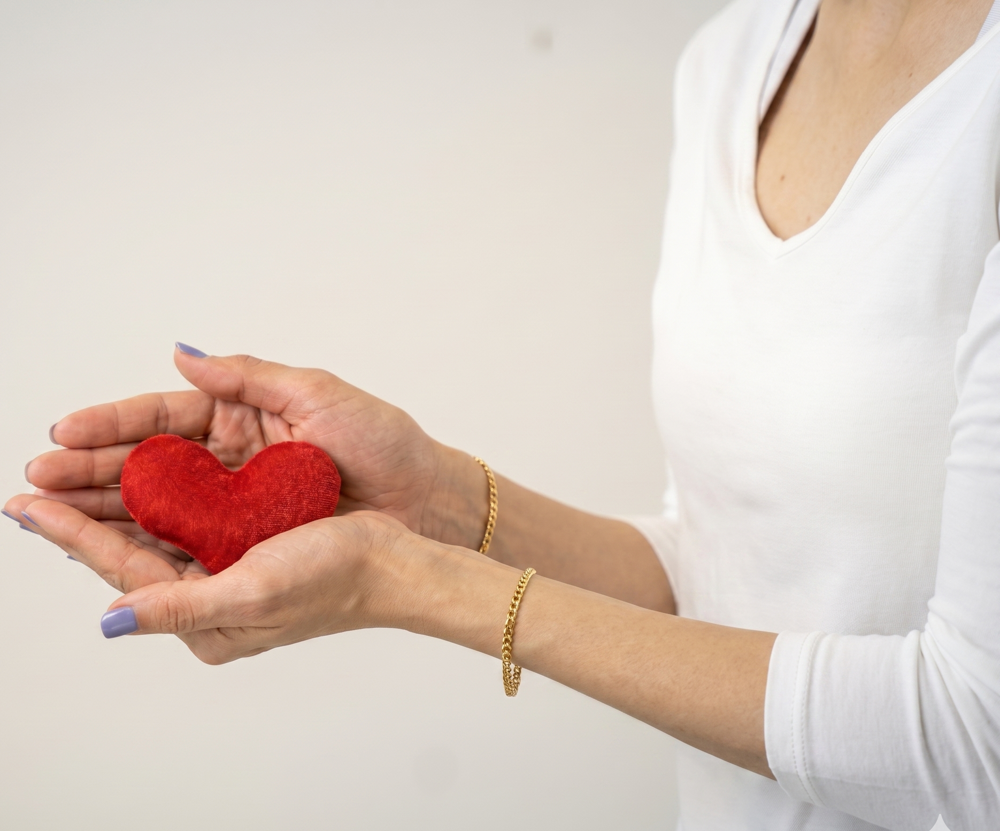
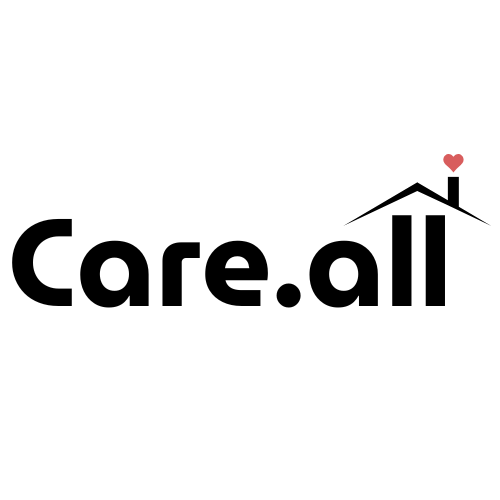
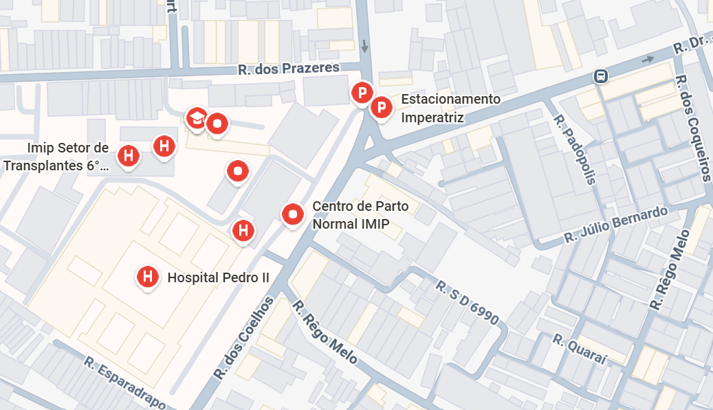
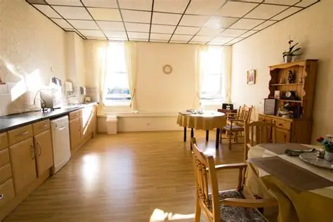

Seu lar enquanto cuida de quem importa
Conectamos pacientes e acompanhantes a hospedagens acolhedoras próximas aos hospitais.

Para pacientes
Hospedagens seguras para tratamentos médicos longe de casa.

Para acompanhantes
Apoio para quem acompanha familiares em momentos delicados.

Para voluntários
Transformando vidas através da solidariedade.

Mais que hospedagem.
A Care.All nasceu para ser uma ponte entre cuidado e dignidade. Nosso propósito é reduzir o impacto emocional e financeiro de famílias que precisam viajar para tratamentos médicos.
Hospedagens Recomendadas


Casa Florença
Parceira da nossa iniciativa, oferece acolhimento seguro e humano, além de ambiente familiar preparado para acolher pessoas em tratamento e seus entes queridos.